사용설명서 주요메뉴 유아 개인평가 교사평가 더보기 유아평가 누리과정 관찰척도 사회∙정서 발달 식습관 공격성 시간표집 사건표집 교사평가 출처 누리과정 척도 평가도구 사회/정서발달 측정도구 수업분위기 분석 유아공격성 평가 척도 식생활 습관 평가방법 분류 도움주신 분
유아목록 : 기본적으로 유아들을 관리하는 메뉴입니다.
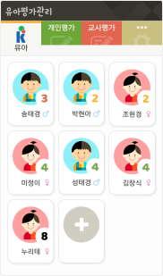유아 선택 : 유아를 터치하시면 됩니다.
유아 추가 : + 버튼을 추가하실 수 있습니다.
유아 삭제 : 유아를 길게 누르시면 삭제하실수 있습니다.
주의! 삭제된 유아 데이타는 복구되지 않습니다. 신중하게 삭제하시기 바랍니다.
유아 세부 : 유아들의 정보를 수정하거나 평가하는 메뉴입니다.
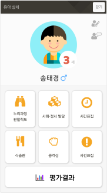유아 수정 : 해당 유아의 정보를 수정할 수 있습니다.
유아 메모 : 해당 유아에 대해 메모를 남겨둘 수 있습니다.
평가 항목 : 선택된 유아로 6가지의 유아평가를 하실 수 있습니다.
평가항목에 대한 자세한 설명은 설명서 하단에 표기되어 있습니다.
평가 결과
분류
기간
유아와 동일합니다.교사평가의 각 항목도 설명서 하단에 자세히 설명되어 있습니다.
3단계로 정도의 차이를 지정합니다.
- 없음
- 보통
- 많음
?버튼을 눌러 도움말을 보실 수 있습니다.…버튼을 눌러 메모를 남길 수 있습니다.중간저장이나평가완료버튼을 눌러 저장합니다. 주의! 저장하지 않으면 평가한 항목은 삭제됩니다.
학기
학기 구분 : 1,2학기로 구분됩니다.
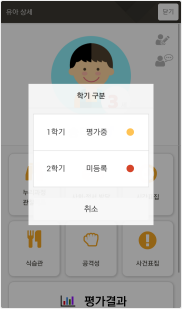평가 상태
평가항목
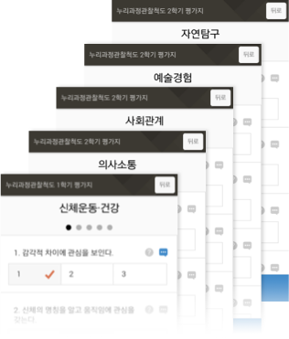
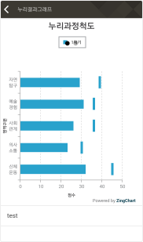 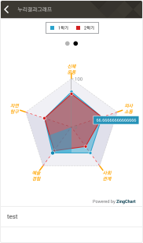
…메모기능특정 항목에 메모를 남기시려면 해당 항목을 길게 누르시면 메모를 남길수 있습니다. 남겨진 메모는 오른쪽 파란색 버튼을 통해 보실 수 있습니다.
3단계로 정도의 차이를 지정합니다.
1) 전혀 그렇지 않다 3) 보통이다 5) 항상 그렇다
?버튼을 눌러 도움말을 보실 수 있습니다.저장버튼을 눌러 저장합니다. 주의! 저장하지 않으면 평가한 항목은 삭제됩니다.
평가항목
사회∙정서 발달과 같이 3단계로 정도의 차이를 지정합니다.1) 전혀 그렇지 않다 3) 보통이다 5) 항상 그렇다
저장버튼을 눌러 저장합니다. 주의! 저장하지 않으면 평가항목은 초기화됩니다.
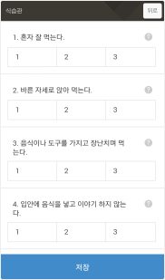 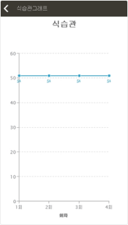
공격성 행동이 관찰되면 해당 항목을 터치하여 카운트를 올립니다.
주의! 하단의
변경내용 저장을 누르시지 않으면 저장되지 않습니다.
평가항목
시간표집법 정의
시간표집법의 절차
시간표집법의 지침
장점
단점
저장하고 종료버튼을 눌러 종료하지 않으면 측정한 데이타는 삭제됩니다.
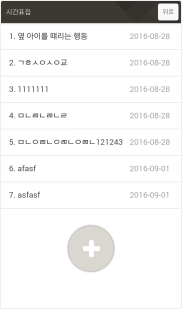 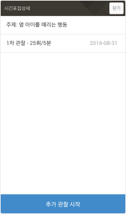 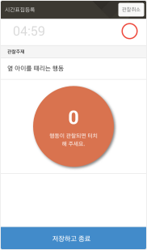
ABC서술식 사건 표집법
어떤 행동의 원인을 알려고 할때 가장 적합하게 사용할수 있는 방법입니다.
장점
단점
빈도사건 표집법
도표를 가지고 미리 정해진 범주의 행동이 일어날 때마다 기록하는 방법입니다.
장점
단점
유아평가관리 앱에서 현재 사용하는 방법입니다.
주의!!
저장이나변경 데이터 적용버튼을 눌러 저장하지 않으면 측정한 데이타는 삭제됩니다.
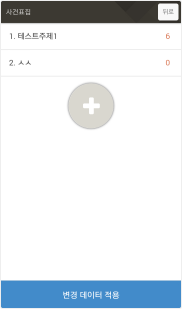
선택활동
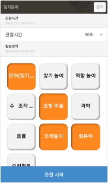 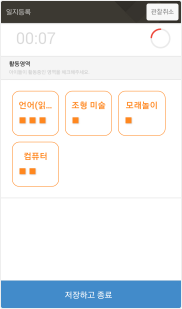 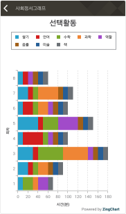한정된 장소에 여러가지 수업활동을 만들었을때, 유아들이 어느 수업에 참여하는지를 체크하는 관찰 방법입니다.
평가 방법
+ 버튼을 눌러 관찰 활동을 추가합니다.
관찰시간과 활동영역을 지정합니다.
관찰시간
수업활동
언어(읽기,쓰기), 쌓기 놀이, 역할 놀이, 수 조작 놀이, 조형 미술, 과학, 음율, 모래놀이, 컴퓨터, 요리활동
처음에는 전부 체크되어 있습니다
관찰 시작 버튼을 눌러 관찰을 시작합니다.
해당 활동영역 버튼 을 눌러 유아를 지정합니다.
기존의 활동영역에 있는 유아를 다른 활동영역에 추가를 하면 이동 됩니다. 따로 유아를 빼지 않으셔도 됩니다.
관찰시간이 종료되거나 관찰활동이 끝났으면 저장하고 종료 버튼을 눌러 종료합니다.
주의!
저장하고 종료버튼으로 종료하지 않으면 관찰내용이 모두 사라집니다.
수업분위기
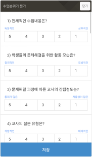교사의 수업에 대해 평가를 28개 문항으로 합니다.
5, 4, 3, 2, 1중 하나를 선택합니다. 독창적<> 상투적
평가 항목
1. 전체적인 수업내용은? 2. 학생들의 문제 해결을 위한 활동 모습은? 3. 문제해결 과정에 따른 교사의 간접정도는? 4. 교사의 질문 유형은? 5. 수업분위기가 이상할 경우 교사의 태도는? 이하 생략
관찰척도
3, 4세 누리과정 유아 (2013) - 육아정책연구소
연구진 : 연구책임자 이미화, 정주영 부연구위원, 엄지원 연구원, 김희정 인턴연구원, 최혜영 교수(창원대), 김명순 교수(연세대), 이완정 교수(인하대), 이정욱 교수(덕성여대), 이경옥 교수(덕성여대), 최일선 교수(경인교대)
평가척도
「5세 누리과정」 운영에 따른 유아평가 연구 (2014) - 육아정책연구소
연구진 : 이미화, 이정림, 여종일, 김경미
Tuckman 교수의 수업분위기 분석법
수업분위기 분석은 수업의 네 가지 핵심적 요소인 창의성, 활기성, 치밀성, 온화성에 초점을 두고 있다.
Frodi 등(1977)은 신체적 공격행동과 언어적 공격행동에 초점을 두되 신체적 공격행동을 다시 대인공격과 대물공격으로 나누었다.
본 유아 공격성 평가 척도 문항은 Frodi 등의 분류를 기준으로 하여 대인공격, 대물공격, 언어공격으로 분류하였다. 유아의 공격성을 측정하기 위하여 한미옥(2000)의 연구에서 사용한 유아의 공격성 관찰척도(교사용)을 바탕으로 박지현(2010)의 연구, 구명실(2007)의 연구, 김유진(2005)의 연구, 박예현(2015)의 연구 등을 참고하여 구성하였다.
구명실(2007). 유아의 거친신체 놀이와 공격성과의 관계. 인천대학교 교육대학원 석사학위 논문. 김유진(2005). 공격성과 사회적 위축에 대한 유아의 추론과 행동. 숙명여자대학교 박사학위 논문. 류선영(2010). 유아의 사회적 유능성과 공격성 및 정서적 부적응 행동의 관계. 영남대학교 석사학위 논문. 박예현(2015). 인성관련 동화를 통한 극화놀이 활동이 유아의 공격성감소와 감정조절능력에 미치는 영향. 전남대학교 석사학위 논문. 박지현(2010). 유아의 자기조절능력 증진 프로그램 개발 및 적용 효과 : 자기조절능력 증진과 공격성 감소효과 연구. 성균관대학교 박사학위 논문. Frodi, A., Macaulay, J., & Thome, P. R. (1977). Are women always aggressive than men? A review of the experimental literature. Psychological Bulletin, 84(4), 842-866.
유아교육기관에서의 식행동(이은혜, 2012)은 유아의 식생활과 식행동을 조사하기 위해 양영순(2008)이 사용한 아동의 식행동 측정도구를 이은혜(2012)가 유아에 맞게 수정 및 보완한 것을 사용하였다.
양영순(2008). 제주지역 초등학생의 식생활 실태 및 영양지식에 관한 연구. 제주대학교 교육대학원 석사학위논문. 이은혜(2012). 유아의 자기조절능력과 식생활 및 식행동 간의 관계 : 가정과 유아교육기관의 비교분석. 덕성여자대학교 석사학위 논문.
시간표집법
시간표집법의 특성
시간표집법 활용
사건표지법
평정척도법
평정척도법의 특성
평정 척도의 유형
도식평정의 예
숫자평정의 예
| 1 | 2 | 3 | 4 | 5 |
| | | | | | | | | | |
카테고리 평정의 예
다음의 네 가지 카테고리로 나누어 평정하는 방법이다.
글자에 관심 가지기
유구종 교수/문학박사 (강릉원주대학교 유아교육과)
© copyright 강원유아교육진흥원